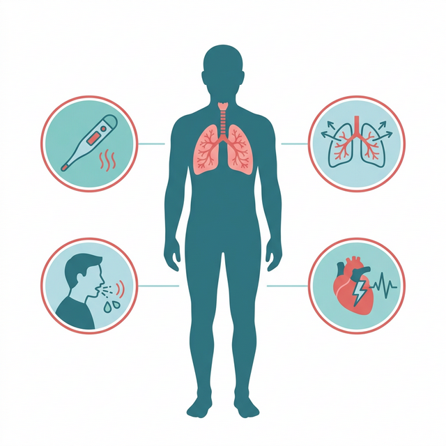
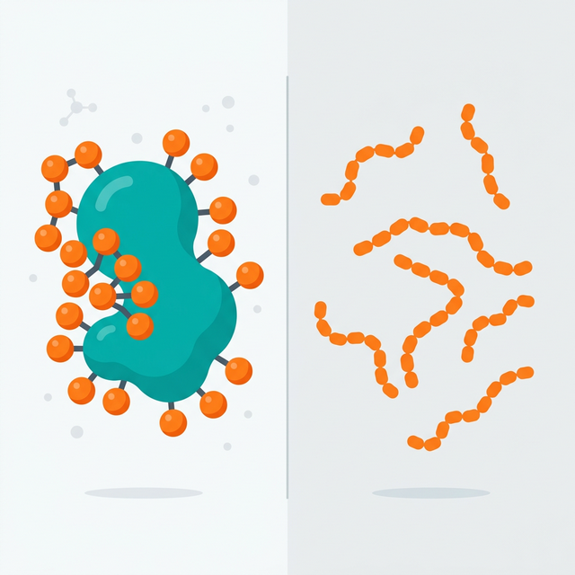

肺炎球菌ワクチン
「キャップバックス」のご案内
Pneumococcal Vaccine CAPVAXIVE (PCV21)
目次
肺炎と肺炎球菌について
肺炎とは
肺炎は、細菌やウイルスなどの病原体がからだに入り込んで起こる肺の炎症です。 主な症状として、発熱・咳や痰・息苦しさ・胸の痛みなどがあります。※6

発熱
咳・痰
息苦しさ
胸の痛み
肺炎球菌による肺炎が起こるまで
肺炎球菌は
鼻やのどに常在
加齢や持病で
免疫力が低下
菌が肺に到達し
肺炎を発症
ワクチン「キャップバックス（PCV21）」の特徴
当院で接種可能な「キャップバックス」は、21種類の肺炎球菌の型に対応した結合型ワクチンです。 既存ワクチンとの違いについては、添付文書やガイドラインに基づき、免疫応答や効果持続に関する報告を踏まえてご説明しています。※3※4

ワクチン比較表 ※3
| 比較項目 |
キャップバックス （PCV21・結合型） |
ニューモバックスNP （PPSV23・多糖体型） |
|---|---|---|
| 含まれる抗原の種類数 | 21種類 | 23種類 |
| 抗体を作らせる能力 | 高い | 低い |
| 効果の持続期間 | 長い | 短い |
| 再接種の必要性 | なし | 5年ごと |
| 公費助成の有無 |
なし （全額自己負担） |
あり （定期接種対象者） |
| 費用（税込） |
14,000円 ※1回接種 |
定期接種対象者は 一部公費負担あり |
免疫応答に関する報告
結合型ワクチンの特性として、免疫記憶を伴う抗体産生が報告されています。
効果持続に関する報告
効果持続については、添付文書・ガイドラインに基づき個別にご案内します。
接種回数の目安
接種回数や追加接種の要否は、年齢・基礎疾患・過去の接種歴により異なります。
接種が推奨される方 ※4
以下に該当する方は、肺炎球菌ワクチンの接種が推奨されています。
肺炎の既往がある方
過去に肺炎で入院または肺炎にかかったことがある方。
呼吸器疾患のある方
COPD、気管支喘息、間質性肺炎、肺癌などの疾患がある方。
循環器疾患のある方
心房細動、心臓弁膜症、虚血性心疾患などの疾患がある方。
脳血管疾患のある方
脳梗塞・脳出血、認知症、パーキンソン病などの疾患がある方。
代謝・腎・肝疾患のある方
糖尿病、慢性腎臓病、慢性肝臓病などの疾患がある方。
免疫機能が低下している方
ステロイドなど免疫抑制剤を服用中の方、脾臓を摘出された方。
施設に入所中の方
老人施設や長期療養施設などに入所されている方。
当院での成人肺炎球菌ワクチン推奨方針（2025年11月以降）
当院では、対象となる方にキャップバックス接種を、医師と相談のうえご案内しています。
接種対象となる方 ※5
65歳未満で肺炎球菌感染症の罹患リスクがある成人
基礎疾患をお持ちの方など、感染症のリスクが高い方が対象です。
65歳以上で肺炎球菌ワクチンの定期接種を受けた方
定期接種から1年以上経過後を目安に、接種可否を個別に判断します。
65歳以上で肺炎球菌ワクチンの定期接種を受けていない方
これまで肺炎球菌ワクチンを一度も接種されたことがない方が対象です。
成人で過去にプレベナー13の接種を受けた方
過去にプレベナー13を接種された方も、接種歴を確認のうえ追加接種の可否を個別に判断します。
副反応と事前の注意事項
事前にご確認ください
過去に肺炎球菌ワクチンを接種したことがある方は、前回接種した時期を必ずお知らせください。 接種間隔の確認が必要です。
主な副反応 ※2
ワクチン接種後に、以下のような症状が現れることがあります。通常、数日以内に改善します。
接種部位の症状
痛み・赤み・腫れ
筋肉痛
接種した腕など
だるさ（倦怠感）
全身のだるさ
発熱
一時的な体温上昇
頭痛
一時的な頭痛
接種後の対応
接種後に気になる症状や体調の変化があらわれた場合は、すぐに当院までご相談ください。
情報元・参考文献
-
※1 厚生労働省「令和5年（2023）人口動態統計月報年計（概数）の概況」
https://www.mhlw.go.jp/toukei/saikin/hw/jinkou/geppo/nengai23/dl/gaikyouR5.pdf -
※2 厚生労働省「高齢者の肺炎球菌ワクチン」
https://www.mhlw.go.jp/stf/seisakunitsuite/bunya/kenkou_iryou/kenkou/kekkaku-kansenshou/yobou-sesshu/vaccine/pneumococcus-senior/index.html -
※3 独立行政法人医薬品医療機器総合機構（PMDA）「医療用医薬品 添付文書等情報検索」
https://www.pmda.go.jp/PmdaSearch/iyakuSearch/ -
※4 日本感染症学会「65歳以上の成人に対する肺炎球菌ワクチン接種に関する考え方（第7版）」
https://www.kansensho.or.jp/uploads/files/guidelines/o65haienV/o65haienV_251027.pdf -
※5 日本感染症学会「肺炎球菌ワクチン」
https://www.kansensho.or.jp/modules/guidelines/index.php?content_id=56 -
※6 一般社団法人日本呼吸器学会「A-04 市中で起こる肺炎 - A. 感染性呼吸器疾患」
https://www.jrs.or.jp/citizen/disease/a/a-04.html -
※7 京都大学化学研究所 KEGG MEDICUS「医療用医薬品 : キャップバックス」
https://www.kegg.jp/medicus-bin/japic_med?japic_code=00071756